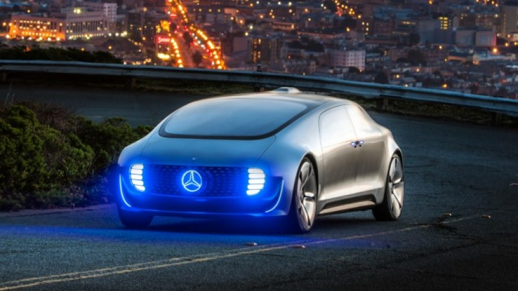
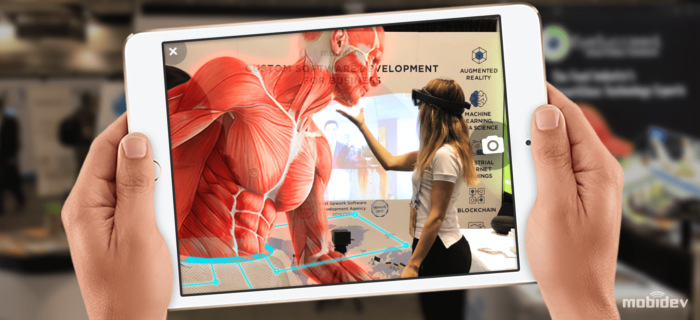

AI is now part of everyday life, driven by the emergence of a device ecosystem including Alexa, Siri, and Google Assistant. In 2020, emotion recognition and computer vision will scale and AI will have a breakout moment in manufacturing.
U.S. startups Vicarious, Kindred, and Osaro stand out in using AI technologies for manufacturing. Kindred’s technology is used to automate part of distribution for apparel brands such as GAP. Vicarious is attracting investment from Mark Zuckerberg, Jeff Bezos, and Elon Musk.
AI will increasingly be monitoring and refining business processes
While the first robots in the workplace were mainly involved with automating manual tasks such as manufacturing and production lines, today's software-based robots will take on the repetitive but necessary work that we carry out on computers. Filling in forms, generating reports and diagrams and producing documentation and instructions are all tasks that can be automated by machines that watch what we do and learn to do it for us in a quicker and more streamlined manner.
More and more personalization will take place in real-time
This trend is driven by the success of internet giants like Amazon, Alibaba, and Google, and their ability to deliver personalized experiences and recommendations. AI allows providers of goods and services to quickly and accurately project a 360-degree view of customers in real-time as they interact through online portals and mobile apps, quickly learning how their predictions can fit our wants and needs with ever-increasing accuracy.
AI increasingly at the “edge”
Much of the AI we’re used to interacting with now in our day-to-day lives takes place “in the cloud” – when we search on Google or flick through recommendations on Netflix, the complex, data-driven algorithms run on high-powered processors inside remote data centers, with the devices in our hands or on our desktops simply acting as conduits for information to pass through.
Machine Learning
Machine learning is an application of artificial intelligence (AI) that provides systems the ability to automatically learn and improve from experience without being explicitly programmed. Machine learning focuses on the development of computer programs that can access data and use it learn for themselves
Customer Service Automation
Managing the growing number of online customer interactions has pushed many organizations to the breaking point. They simply don’t have the customer support staff on-hand to deal with the number of inquiries they’re receiving and the old solution of outsourcing issues to a call center is simply unacceptable for many of today’s customers. Advances in machine learning algorithms have made it possible for chatbots and other automated systems to fill these needs. By automating routine and low priority tasks, companies can free up employees to handle more high-level customer service.
Cybersecurity
As networks become increasingly complex, cybersecurity experts have worked hard to respond to the ever-expanding scope of security threats. Rapidly changing malware and hacking techniques are difficult enough to counter, but the proliferation of Internet of Things (IoT) devices have fundamentally altered the cybersecurity landscape. Attacks can come from anywhere, at any time, and in any form. Fortunately, machine learning algorithms have allowed cybersecurity efforts to keep pace with these rapid changes.
Object Recognition
While the technology to gather and read data has existed for quite some time, teaching computer systems to actually understand what they’re looking at has proved to be a deceptively complicated problem. Thanks to machine learning applications, more and more devices now feature object recognition capabilities. An autonomous vehicle, for instance, knows another car when it sees one, even if programmers didn’t provide it with an exact example of that car to use as a reference.
Fraud Detection
The increasing number of financial transactions taking place online has raised consumer awareness about various forms of fraud. While they enjoy the convenience of being able to make purchases and payments online, they want to know that their financial data is being protected in the process. Credit card companies and banks have responded by turning to machine learning algorithms that can review vast amounts of transactional data to identify suspicious activity.
Internet of Things

Internet is engulfing all technologies at a brisk speed, resulting in the creation of a world where every other thing relates to the internet. The internet is no more limited to just computers, smartphones, and tablets. It has now touched hearts of several other devices and is making our lives more convenient by enabling us to communicate with devices with ease and simplicity.
By 2020, Internet of Things Will Connect 21 Billion Devices
The Internet of Things has taken the technology world by storm. And its limitless applications have fueled its popularity. Hence, every year more and more devices are getting connected with IoT.
In 2015, there were 4.9 million devices related to IoT, but by the end of 2016 this number skyrocketed to 3.9 billion. Within one year, the number increased from million to billion and experts believe that this sensational rate of growth will continue in the upcoming years as well.
It is estimated that by 2020, there will be up to 21 billion devices across the globe connected with 'Internet of Things'. This number is enough to reflect how enormous the ecosystem of IoT would become and how it will be practically impossible for a person to stay away from this phenomenon.
Cities Will Continue to Become Smart
Internet of Things won't only be limited to devices and things, it will have wider applications. One such obvious application of Internet of Things is the functioning of cities.
In future, cities will become smart courtesy the data gained from IoT and will enable its citizen to enjoy a hassle free and comfortable life. Thanks to IoT, cities will become more efficient & will be able to save money, time & other resources.
IoT Will See Fragmentation
The growth and development of IoT will not only be vertical, in fact, it will see a lot of fragmentation. This obvious fragmentation will cause serious issues of compatibility as companies will struggle to create and maintain device standards and certifications.
This will push companies to come together and create an eco-system that channelizes smooth running of IoT. It will open new avenues for tech personals to create systems that collaborate with other devices and have universal adaptability.
Robotic Process Animation
Robotic Process Automation is the technology that allows anyone today to configure computer software, or a “robot” to emulate and integrate the actions of a human interacting within digital systems to execute a business process.Robotic Process Automation (RPA) market is evolving at an incredible pace and is expected to grow at a CAGR of 20.3% between 2020 and 2025. This growth can be majorly ascribed to how RPA streamlines and improves legacy processes at the same time get high returns on investment (ROI).
RPA will develop as a complementary technology:
The key advantage of RPA is that it blends well with prevailing technologies. RPA has the potential to adjust quickly to changing circumstances and pick up accordingly; hence it improves processes rather than replacing them. Subsequently, it’s not always feasible to redesign workflows from scratch, automating inefficient processes with RPA can significantly improve productivity.
Intelligent Automation will Gain Spotlight:
In 2020, forerunners will expand their basic RPA efforts with a blending of rules-based and AI-fueled automation by means of a fully integrated intelligent automation approach, allowing them to discover new value in the method for operational efficiency and workforce capacity.
With everything well-thought-out, intelligent automation ready to take a critical jump in 2020 and convey unique results to companies that make automation a key component of their digital transformation.
RPA for Security:
RPA will turn into an increasingly a mandatory piece of data security practices, not on that a multitude of bots will be attacking on the front lines, but then they can help lessen the most widespread risk of all.
Work today is going quicker and progressively, making the challenge of safeguarding sensitive data against human mistake. As significant data streams all through companies, across different groups, partners, devices, and customers, the human-only way to deal with data security mainly cannot scale to handle this information burst.
Virtual Reality
Virtual reality – where users wear a headset and are fully immersed in computer-generated environments – has been developed to meet design, marketing, education, training, and retail needs. Augmented reality – where computer images are superimposed onto the user's view of the real world, through a screen or headset – is a more complex challenge, as it requires the software to "see" what is in front of it. But we're getting used to seeing it used for more than adding cartoon features to selfie pictures or spotting Pokemon in the wild.
Industrial use outpaces gaming and entertainment
Most people's first experiences of VR and AR today are likely to be in gaming and entertainment. That's likely to change, as research shows that the development of enterprise XR solutions is overtaking that on consumer solutions. The 2020 XR Industry Insight report collated by VR Intelligence states that 65% of the AR companies surveyed said they are working on industrial applications, while just 37% working on consumer products and software.
XR takes off in healthcare
The potential uses for these technologies in healthcare are obvious, and over 2020 we can expect to see many of these use cases transition from trials and pilots and gradually into general use. Virtual reality has already been adopted in therapy, where it is used to treat patients with phobias and anxiety disorders. Combined with biosensors that monitor physiological reactions like heart rate and perspiration, therapists can get a better understanding of how patients react to stressful situations in a safe, virtual environment. VR is also used to help people with autism develop social and communication skills, as well as to diagnose patients with visual or cognitive impairments, by tracking their eye moveme
Headsets get smaller, more mobile and more powerful
One of the biggest limiting factors with current XR technology is the need for encumbering headsets and display units. This is more of a problem with VR, where the powerful processing hardware needed to generate the graphics is usually contained within the headset. However, hardware devices have started to trend towards being "untethered" – For example, Facebook's Oculus headset initially needed to be connected to a powerful PC, but this year became available as the self-contained Oculus Quest version.
Augmented Reality

Augmented Reality– where users wear a headset and are fully immersed in computer-generated environments – has been developed to meet design, marketing, education, training, and retail needs. Augmented reality – where computer images are superimposed onto the user's view of the real world, through a screen or headset – is a more complex challenge, as it requires the software to "see" what is in front of it. But we're getting used to seeing it used for more than adding cartoon features to selfie pictures or spotting Pokemon in the wild.
AUGMENTED REALITY AS A NOVEL WAY OF SHOPPING
Several companies have gotten out in front of consumer demand for AR shopping. American Apparel, Uniqlo and Lacoste have deployed showrooms and fitting rooms that provide try-before-you-buy options in augmented reality spaces. Smart mirror technologies that scan RFID tags also offer the ability to bring recommendations to the brick-and-mortar shopping experience. IKEA customers have access to an app that permits them to point their phones at spaces and see what different products would look like in their own homes.
AR FOR NAVIGATION SOLUTIONS
One of the most obvious use cases for AR technologies is indoor navigation, and 2020 is expected to be the year that the average consumer gets their first real taste of its potential. People already lean heavily on maps services from both Google and Apple to get around outside, but indoor navigation stands to be the use case that blows the public away.
AR-POWERED SOLUTIONS FOR THE ENTERPRISE
Smart glasses are currently at a stage where consumer solutions are likely a few years off. Military, medical and enterprise solutions, however, are beginning to prove the value of combining AR with headsets and smart glasses.
One of the major current headwinds for AR is battery life. Announced in February 2019, Microsoft HoloLens 2 was likely the most anticipated product in this space in 2019. The company hopes to roll out its technology to great fanfare by demonstrating improvements in raw processing power, battery life and wearability. The U.S. Army has awarded a $480 contract to Microsoft, and the company is also working with the industrial IoT firm PTC to streamline the development of both augmented and mixed reality products.